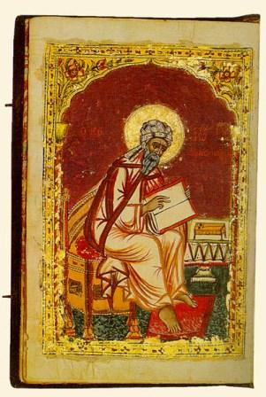

An Exact Exposition of the Orthodox Faith
by St John Damascene
Book 4

<- BOOK IV CHAPTER I ->
Concerning what followed the Resurrection.
After Christ was risen from the dead He laid aside all His passions, I mean His corruption or hunger or thirst or sleep or weariness or such like. For, although He did taste food after the resurrection(1), yet He did not do so because it was a law of His nature (for He felt no hunger), but in the way of economy, in order that He might convince us of the reality of the resurrection, and that it was one and the same flesh which suffered and rose again(2). But He laid aside none of the divisions of His nature, neither body nor spirit, but possesses both the body and the soul intelligent and reasonable, volitional and energetic, and in this wise He sits at the right hand of the Father, using His will both as God and as man in behalf of our salvation, energising in His divine capacity to provide for and maintain and govern all things, and remembering in His human capacity the time He spent on earth, while all the time He both sees and knows that He is adored by all rational creation. For His Holy Spirit knows that He is one in substance with God the Word, and shares as Spirit of God and not simply as Spirit the worship accorded to Him. Moreover, His ascent from earth to heaven, and again, His descent from heaven to earth, are manifestations of the energies of His circumscribed body. For He shall so come again to you, saith he, in like manner as ye have seen Him go into Heaven(3).
<-
BOOK IV CHAPTER II
->
Concerning the sitting at the right hand of the Father.
We hold, moreover, that Christ sits in the body at the right hand of God the Father, but we do not hold that the right hand of the Father is actual place. For how could He that is uncircumscribed have a right hand limited by place? Right hands and left hands belong to what is circumscribed. But we understand the right hand of the Father to be the glory and honour of the Godhead in which the Son of God, who existed as God before the ages, and is of like essence to the Father, and in the end became flesh, has a seat in the body, His flesh sharing in the glory. For He along with His flesh is adored with one adoration by all creation(4).
<-
BOOK IV CHAPTER III
->
In reply to those who say(5) "If Christ has two natures, either ye do service to the creature in worshipping created nature, or ye say that there is one nature to be worshipped, and another not to be worshipped.
Along with the Father and the Holy Spirit we worship the Son of God, Who was incorporeal before He took on humanity, and now in His own person is incarnate and has become man though still being also God. His flesh, then, in its own nature(6), if one were to make subtle mental distinctions between what is seen and what is thought, is not deserving of worship since it is created. But as it is united with God the Word, it is worshipped on account of Him and in Him. For just as the king deserves homage alike when un-robed and when robed, and just as the purple robe, considered simply as a purple robe, is trampled upon and tossed about, but after becoming the royal dress receives all honour and glory, and whoever dishonours it is generally condemned to death: and again, just as wood in itself(7) is not of such a nature that it cannot be touched, but becomes so when fire is applied to it, and it becomes charcoal, and yet this is not because of its own nature, but because of the fire united to it, and the nature of the wood is not such as cannot be touched, but rather the charcoal or burning wood: so also the flesh, in its own nature, is not to be worshipped, but is worshipped in the incarnate God Word, not because of itself, but because of its union in subsistence with God the Word. And we do not say that
we worship mere flesh, but God's flesh, that is, God incarnate.
<-
BOOK IV CHAPTER IV
->
Why it was the Son of God, and not the Father or the Spirit, that became man: and what having became man He achieved.
The Father is Father(8) and not Son(9): the Son is Son and not Father: the Holy Spirit is Spirit and not Father or Son. For the individuality(9a) is unchangeable. How, indeed, could individuality continue to exist at all if it were ever changing and altering? Wherefore the Son of God became Son of Man in order that His individuality might endure. For since He was the Son of God, He became Son of Man, being made flesh of the holy Virgin and not losing the individuality of Sonship(1).
Further, the Son of God became man, in order that He might again bestow on man that favour for the sake of which He created him. For He created him after His own image, endowed with intellect and free-will, and after His own likeness, that is to say, perfect in all virtue so far as it is possible for man's nature to attain perfection. For the following properties are, so to speak, marks of the divine nature: viz. absence of care and distraction and guile, goodness, wisdom, justice, freedom from all vice. So then, after He had placed man in communion with Himself (for having made him for incorruption(2), He led him up through communion wills Himself to incorruption), and when moreover, through the transgression of the command we had confused and obliterated the marks of the divine image, and had become evil, we were stripped of our communion with God (for what communion hath light with darkness(3)?): and having been shut out from life we became subject to the corruption of death: yea, since He gave us to share in the better part, and we did not keep it secure, He shares in the inferior part, I mean our own nature, in order that through Himself and in Himself He might renew that which was made after His image and likeness, and might teach us, too, the conduct of a virtuous life, making through Himself the way thither easy for us, and might by the communication of life deliver us from corruption, becoming Himself the firstfruits of our resurrection, and might renovate the useless and worn vessel calling us to the knowledge of God that He might redeem us from the tyranny of the devil, and might strengthen and teach us how to overthrow the tyrant through patience and humility(4).
The worship of demons then has ceased: creation has been sanctified by the divine blood: altars and temples of idols have been overthrown, the knowledge of God has been implanted in men's minds, the co-essential Trinity, the uncreate divinity, one true God, Creator and Lord of all receives men's service: virtues are cultivated, the hope of resurrection has been granted through the resurrection of Christ, the demons shudder at those men who of old were under their subjection. And the marvel, indeed, is that all this has been successfully brought about through His cross and passion and death. Throughout all the earth the Gospel of the knowledge of God has been preached; no wars or weapons or armies being used to rout the enemy, but only a few, naked, poor, illiterate, persecuted and tormented men, who with their lives in their hands, preached Him Who was crucified in the flesh and died, and who became victors over the wise and powerful. For the omnipotent power of the Cross accompanied them. Death itself, which once was maws chiefest terror, has been overthrown, and now that which was once the object of hate and loathing is preferred to life. These are the achievements of Christ's presence: these are the tokens of His power. For it was not one people that He saved, as when through Moses He divided the sea and delivered Israel out of Egypt and the bondage of Pharaoh(5); nay, rather He rescued all mankind from the corruption of death and the bitter tyranny of sin: not leading them by force to virtue, not overwhelming them with earth or burning them with fire, or ordering the sinners to be stoned, but persuading men by gentleness and long-suffering to choose virtue and vie with one another, and find pleasure in the struggle to attain it. For, formerly, it was sinners who were persecuted, and yet they clung all the closer to sin, and sin was looked upon by them as their God: but now for the sake of piety and virtue men choose persecutions and crucifixions and death.
Hail! O Christ, the Word and Wisdom and Power of God, and God omnipotent! What can we helpless ones give Thee in return for
all these good gifts? For all are Thine, and Thou askest naught from us save our salvation, Thou Who Thyself art the Giver of this, and yet art grateful to those who receive it, through Thy unspeakable goodness. Thanks be to Thee Who gave us life, and granted us the grace of a happy life, and restored us to that, when we had gone astray, through Thy unspeakable condescension.
<-
BOOK IV CHAPTER V
->
In reply to those who ask if Christ's subsistence is create or uncreate.
The subsistence(6) of God the Word before the Incarnation was simple and uncompound, and incorporeal and uncreate: but after it became flesh, it became also the subsistence of the flesh, and became compounded of divinity which it always possessed, and of flesh which it had assumed: and it bears the properties of the two natures, being made known in two natures: so that the one same subsistence is both uncreate in divinity and create in humanity, visible and invisible. For otherwise we are compelled either to divide the one Christ and speak of two subsistences, or to deny the distinction between the natures and thus introduce change and confusion.
<-
BOOK IV CHAPTER VI
->
Concerning the question, when Christ was called.
The mind was not united with God the Word, as some falsely assert(7), before the Incarnation by the Virgin and from that time called Christ. That is the absurd nonsense of Origen(8) who lays down the doctrine of the priority of the existence of souls. But we hold that the Son and Word of God became Christ after He had dwelt in the womb of His holy ever-virgin Mother, and became flesh without change, and that the flesh was anointed with divinity. For this is the anointing of humanity, as Gregory the Theologian says(9). And here are the words of the most holy Cyril of Alexandria which he wrote to the Emperor Theodosius(1): "For I indeed hold that one ought to give the name Jesus Christ neither to the Word that is of God if He is without humanity, nor yet to the temple born of woman if it is not united with the Word. For the Word that is of God is understood to be Christ when united with humanity in ineffable manner in the union of the oeconomy(2)." And again, he writes to the Empresses thus(3): "Some hold that the name 'Christ' is rightly given to the Word that is begotten of God the Father, to Him alone, and regarded separately by Himself. But we have not been taught so to think and speak. For when the Word became flesh, then it was, we say, that He was called Christ Jesus. For since He was anointed with the oil of gladness, that is the Spirit, by Him Who is God and Father, He is for this reason(4) called Christ. But that the anointing was an act that concerned Him as man could be doubted by no one who is accustomed to think rightly." Moreover, the celebrated Athanasius says this in his discourse "Concerning the Saving Manifestation:" "The God Who was before the sojourn in the flesh was not man, but God in God, being invisible and without passion, but when He became man, He received in addition the name of Christ because of the flesh, since, indeed, passion and death follow in the train of this name."
And although the holy Scripture(4) says, Therefore God, thy God, hath anointed thee with the oil of gladness(5), it is to be observed that the holy Scripture often uses the past tense instead of the future, as for example here: Thereafter He was seen upon the earth and dwelt among men(6). For as yet God was not seen nor did He dwell among men when this was said. And here again: By the rivers of Babylon, there we sat down; yea wept(7). For as yet these things had not come to pass.
<-
BOOK IV CHAPTER VII
->
In answer to those who enquire whether the holy Mother of God bore two natures, and whether two natures hung upon the Crass.
and that of procession in the Holy Spirit. Moreover of each species of living creatures, the first members were
But if our interrogators should hint that He Who is begotten of the holy Mother of God is two natures, we reply, "Yea! He is two natures: for He is in His own person God and man. And the same is to be said concerning the crucifixion and resurrection and ascension. For these refer not to nature but to subsistence. Christ then, since He is in two natures, suffered and was crucified in the nature that was subject to passion. For it was in the flesh and not in His divinity that He hung upon the Cross. Otherwise, let them answer us, when we ask if two natures died. No, we shall say. And so two natures Were not crucified but Christ was begotten, that is to say, the divine Word having become man was begotten in the flesh, was crucified in the flesh, suffered in the flesh, while His divinity continued to be impossible."
<-
BOOK IV CHAPTER VIII
->
How the Only-begotten Son of God is called first-born.
He who is first begotten is called first-born(1), whether he is only-begotten or the first of a number of brothers. If then the Son of God was called first-born, but was not called Only-begotten, we could imagine that He was the first-born of creatures, as being a creature(2). But since He is called both first-born and Only-begotten, both senses must be preserved in His case. We say that He is first-born of all creation(3) since both He Himself is of God and creation is of God, but as He Himself is born alone and timelessly of the essence of God the Father, He may with reason be called Only-begotten Son, first-born and not first-created. For the creation was not brought into being out of the essence of the Father, but by His will out of nothing(4). And He is called First-born among many brethren(5), for although being Only-begotten, He was also born of a mother. Since, indeed, He participated just as we ourselves do in blood and flesh and became man, while we too through Him became sons of God, being adopted through the baptism, He Who is by nature Son of God became first-born amongst us who were made by adoption and grace sons of God, and stand to Him in the relation of brothers. Wherefore He said, I ascend unto My Father and your Father(6). He did not say "our Father," but "My Father," clearly in the sense of Father by nature, and "your Father," in the sense of Father by grace. And "My God and your God(7)." He did not say "our God," but "My God:" and if you distinguish with subtle thought that which is seen from that which is thought, also "your God," as Maker and Lord.
<-
BOOK IV CHAPTER IX
->
Concerning Faith and Baptism.
We confess one baptism for the remission of sins and for life eternal. For baptism declares the Lord's death. We are indeed "buried with the Lord through baptism(8)," as saith the divine Apostle. So then, as our Lord died once for all, we also must be baptized once for all, and baptized according to the Word of the Lord, In the Name of the Father, and of the Son, and of the Holy Spirit(9), being taught the confession in Father, Son, and Holy Spirit. Those(1), then, who, after having been baptized into Father, Son, and Holy Spirit, and having been taught that there is one divine nature in three subsistences, are rebaptized, these, as the divine Apostle says, crucify the Christ afresh. For it is impossible, he saith, for those who were once enlightened, &c., to renew them again unto repentance: seeing they crucify to themselves the Christ afresh, and put Him to an open shame(2). But those who were not bap-
tized into the Holy Trinity, these must be baptized again. For although the divine ApoStle says: Into Christ and into His death were we baptized(3), he does not mean that the invocation of baptism must be in these words, but that baptism is an image of the death of Christ. For by the three immersions(4), baptism signifies the three days of our Lord's entombment(5). The baptism then into Christ means that believers are baptized into Him. We could not believe in Christ if we were not taught confession in Father, Son, and Holy Spirit(6). For Christ is the Son of the Living God(7), Whom the Father anointed with the Holy Spirit(8): in the words of the divine David, Therefore God, thy God, hath anointed thee with the oil of gladness above thy fellows(9). And Isaiah also speaking in the person of the Lord says, The Spirit of the Lord is upon me because He hath anointed me(1). Christ, however, taught His own disciples the invocation and said, Baptizing them in the Name of the Father, and of the Son, and of the Holy Spirit(2). For since Christ made us for incorruption(3)(4), and we transgressed His saving command. He condemned us to the corruption of death in order that that which is evil should not be immortal, and when in His compassion He stooped to His servants and became like us, He redeemed us from corruption through His own passion. He caused the fountain of remission to well forth for us out of His holy and immaculate side(5), water for our regeneration, and the washing away of sin and corruption; and blood to drink as the hostage of life eternal. And He laid on us the command to be born again of water and of the Spirit(6), through prayer and invocation, the Holy Spirit drawing nigh unto the water(7). For since man's nature is twofold, consisting of soul and body, He bestowed on us a twofold purification, of water and of the Spirit the Spirit renewing that part in us which is after His image and likeness, and the water by the grace of the Spirit cleansing the body from sin and delivering it from corruption, the water indeed expressing the image of death, but the Spirit affording the earnest of life.
For from the beginning the Spirit of God moved upon the face of the waters(8), and anew the Scripture witnesseth that water has the power of purification(9). In the time of Noah God washed away the sin of the world by water(1). By water every impure person is purified(2), according to the law, even the very garments being washed with water. Elias shewed forth the grace of the Spirit mingled with the water when he burned the holocaust by pouring on water(3). And almost everything is purified by water according to the law: for the things of sight are symbols of the things of thought. The regeneration, however, takes place in the spirit: for faith has the power of making us sons (of God(4)), creatures as we are, by the Spirit, and of leading us into our original blessedness.
The remission of sins, therefore, is granted alike to all through baptism: but the grace of the Spirit is proportional to the faith and previous purification. Now, indeed, we receive the firstfruits of the Holy Spirit through baptism, and the second birth is for us the beginning and seal and security and illumination s of another life.
It behoves as, then, with all our strength to steadfastly keep ourselves pure from filthy works, that we may not, like the dog returning to his vomit(6), make ourselves again the slaves of sin. For faith apart from works is dead, and so likewise are works apart from faith(7). For the true faith is attested by works.
Now we are baptized(8) into the Holy Trinity because those things which are baptized have need of the Holy Trinity for their maintenance and continuance, and the three subsistences cannot be otherwise than present, the one with the other. For the Holy Trinity is indivisible.
The first baptism(9) was that of the flood for the eradication of sin. The second(1) was through the sea and the cloud: for the cloud is the symbol of the Spirit and the sea of the water(2). The third baptism was that of the Law: for every impure person washed himself with water, and even washed his garments, and so entered into the camp(3). The fourth(4) was that of John(5), being preliminary and leading those who were baptized to repent-once, that they might believe in Christ: I,
certainly return unto thee at this time hereafter, and Sarah thy wife shall have a son(6) ; and afterwards the Lord said to Him, I will not conceal from Abraham My servant the things that I will do(7) ; and again, Moreover the Lord said, The cry of Sodom and Gomorrah is filled up, and their sins are exceeding great(8). Then after long discourse, which for the sake of brevity shall be omitted, Abraham, distressed at the destruction which awaited the innocent as well as the guilty, said, In no wise wilt Thou, Who judgest the earth, execute this judgment. And the Lord said, If I find in Sodom fifty righteous within the city, then I will spare all the place for their sakes(9). Afterwards when the warning to Lot, Abraham's brother, was ended, the Scripture says, And the Lord rained upon Sodom and upon Gomorrah brimstone and fire f rom the Lord out of heaven(1) ; and, after a while, And the Lord visited Sarah as He had said, and did unto Sarah as He had spoken, and Sarah conceived and bare Abraham a son in his old age, at the set time of which God had spoken to him(2). And afterwards, when the handmaid with her son had been driven from Abraham's house, and was dreading lest her child should die in the wilderness for want of water, the same Scripture says, And the Lord God heard the voice of the lad, where he was, and the Angel of God child to Hagar out of heaven, and said unto her, What is it, Hagar? Fear not, for God hath heard the voice of the lad from the place where he is. Arise, and take the lad, and hold his hand, for I will make him a great nation(3).
26. What blind faithlessness it is, what dulness of an unbelieving heart, what headstrong impiety, to abide in ignorance of all this, or else to know and yet neglect it! Assuredly it is written for the very purpose that error or oblivion may not hinder the recognition of the truth. If, as we shall prove, it is impossible to escape knowledge of the facts, then it must be nothing less than blasphemy to deny them. This record begins with the speech of the Angel to Hagar, His promise to multiply Ishmael into a great nation and to give him a countless offspring. She listens, and by her confession reveals that He is Lord and God. The story begins with His appearance as the Angel of God; at its termination He stands confessed as God Himself. Thus He Who, while He executes the ministry of declaring the great counsel is God's Angel, is Himself in name and nature God. The name corresponds to the nature; the nature is not falsified to make it conform to the name. Again, God speaks to Abraham of this same matter; he is told that Ishmael has already received a blessing, and shall be increased into a nation; I have blessed him, God says. This is no change from the Person indicated before; He shews that it was He Who had already given the blessing. The Scripture has obviously been consistent throughout in its progress from mystery to clear revelation; it began with the Angel of God, and proceeds to reveal that it was God Himself Who had spoken in this same matter.
27. The course of the Divine narrative is accompanied by a progressive development of doctrine. In the passage which we have discussed God speaks to Abraham, and promises that Sarah shall bear a son. Afterwards three men stand by him; he worships One and acknowledges Him as Lord. After this worship and acknowledgment by Abraham, the One promises that He will return hereafter at the same season, and that then Sarah shall have her son. This One again is seen by Abraham in the guise of a man, and salutes him with the same promise. The change is one of name only; Abraham's acknowledgment in each ease is the same. It was a Man whom he saw, yet Abraham worshipped Him as Lord; he beheld, no doubt, in a mystery the coming Incarnation. Faith so strong has not missed its recognition; the Lord says in the Gospel, Your father Abraham rejoiced to see My day; and he saw it, and was glad(4). To continue the history; the Man Whom he saw promised that He would return at the same season. Mark the fulfilment of the promise, remembering meanwhile that it was a Man Who made it. What says the Scripture? And the Lord visited Sarah. So this Man is the Lord, fulfilling His own promise. What follows next? And God did unto Sarah as He had said. The narrative calls His words those of a Man, relates that Sarah was visited by the Lord, proclaims that the result was the work of God. You are sure that it was a Man who spoke, for Abraham not only heard, but saw Him. Can you be less certain that He was God, when the same Scripture, which had called Him Man, confesses Him God? For its words are, And Sarah conceived, and bare Abraham a son in his old age, and at the set time of which God had spoken to him. But it was the Man who had promised that He would come. Believe that He was nothing more than man; unless, in fact, He Who came was God and Lord. Connect the incidents. It was, confessedly, the Man who promised that He would come that Sarah might con-
and omnipotence and truth and wisdom and justice, he will find all things smooth and even, and the way straight. But without faith it is impossible to be saved(2). For it is by faith that all things, both human and spiritual, are sustained. For without faith neither does the farmer(3) cut his furrow, nor does the merchant commit his life to the raging waves of the sea on a small piece of wood, nor are marriages contracted nor any other step in life taken. By faith we consider that all things were brought out of nothing into being by God's power. And we direct all things, both divine and human, by faith. Further, faith is assent free from all meddlesome inquisitiveness(4).
Every action, therefore, and performance of miracles by Christ are most great and divine and marvellous: but the most marvellous of all is His precious Cross. For no other thing has subdued death, expiated the sin of the first parent(5), despoiled Hades, bestowed the resurrection, granted the power to us of contemning the present and even death itself, prepared the return to our former blessedness, opened the gates of Paradise(6), given our nature a seat at the right hand of God, and made us the children and heirs of God(7), save the Cross of our Lord Jesus Christ. For by the Cross s all things have been made right. So many of us, the apostle says, as were baptized into Christ, were baptized into His death(9), and as many of you as have been baptized into Christ, have put on Christ(1). Further Christ is the power of God and the wisdom of God(2). Lo! the death of Christ, that is, the Cross, clothed us with the enhypostatic wisdom and power of God. And the power of God is the Word of the Cross, either because God's might, that is, the victory over death, has been revealed to us by it, or because, just as the four extremities of the Cross are held fast and bound together by the bolt in the middle, so also by God's power the height and the depth, the length and the breadth, that is, every creature visible and invisible, is maintained(3).
This was given to us as a sign on our forehead, just as the circumcision was given to Israel: for by it we believers are separated and distinguished from unbelievers. This is the shield and weapon against, and trophy over, the devil. This is the seal that the destroyer may not touch you(4), as saith the Scripture. This is the resurrection of those lying in death, the support of the standing, the staff of the weak, the rod of the flock, the safe conduct of the earnest, the perfection of those that press forwards, the salvation of soul and body, the aversion of all things evil, the patron of all things good, the taking away of sin, the plant of resurrection, the tree of eternal life.
So, then, this same truly precious and august tree(5), on which Christ hath offered Himself as a sacrifice for our sakes, is to be worshipped as sanctified by contact with His holy body and blood; likewise the nails, the spear, the clothes, His sacred tabernacles which are the manger, the cave, Golgotha, which bringeth salvation(6), the tomb which giveth life, Sion, the chief stronghold of the churches and the like, are to be worshipped. In the words of David, the father of God(7), We shall go into His tabernacles, we shall worship at the place where His feet stood(8). And that it is the Cross that is meant is made clear by what follows, Arise, O Lord, into Thy Rest (9). For the resurrection comes after the Cross. For if of those things which we love, house and couch and garment, are to be longed after, how much the rather should we long after that which belonged to God, our Saviour(1), by means of which we are in truth saved.
Moreover we worship even the image of the precious and life-giving Cross, although made of another tree, not honouring the tree (God forbid) but the image as a symbol of Christ. For He said to His disciples, admonishing them, Then shall appear the sign of the Son of Man in Heaven(2), meaning the Cross. And so also the angel of the resurrection said to the woman, Ye seek Jesus of Nazareth which was crucified(3). And the Apostle said, We preach Christ crucified(4). For there are many Christs and many Jesuses, but one crucified. He does not say speared but crucified. It behoves us, then, to worship the sign of Christ(5). For wherever the sign may be, there also will He be. But it does not behove us to worship the material of which the image of the Cross is composed, even though it be gold or precious stones, after it is destroyed, if that should happen. Everything, therefore, that is dedicated to God we worship, conferring the adoration on Him.
The tree of life which was planted by God in Paradise pre-figured this precious Cross.
For since death was by a tree, it was fitting that life and resurrection should be bestowed by a tree(6). Jacob, when He worshipped the top of Joseph's staff, was the first to image the Cross, and when he blessed his sons with crossed hands(7) he made most clearly the sign of the cross. Likewise(8) also did Moses' rod, when it smote the sea in the figure of the cross and saved Israel, while it overwhelmed Pharaoh in the depths; likewise also the hands stretched out crosswise and routing Amalek; and the bitter water made sweet by a tree, and the rock rent and pouring forth streams of water(9), and the rod that meant for Aaron the dignity of the high priesthood(1): and the serpent lifted in triumph on a tree as though it were dead(2), the tree bringing salvation to those who in faith saw their enemy dead, just as Christ was nailed to the tree in the flesh of sin which yet knew no sin(3). The mighty Moses cried(4), You will see your life hanging on the tree before your eyes, and Isaiah likewise, I have spread out my hands all the day unto a faithless and rebellious people(5). But may we who worship this(6) obtain a part in Christ the crucified. Amen.
<-
BOOK IV CHAPTER XII
->
Concerning Worship towards the East.
It is not without reason or by chance that we worship towards the East. But seeing that we are composed of a visible and an invisible nature, that is to say, of a nature partly of spirit and partly of sense, we render also a twofold worship to the Creator; just as we sing both with our spirit and our bodily lips, and are baptized with both water and Spirit, and are united with the Lord in a twofold manner, being sharers in the mysteries and in the grace of the Spirit.
Since, therefore, God(7) is spiritual light(8), and Christ is called in the Scriptures Sun of Righteousness(1) and Dayspring(2), the East is the direction that must be assigned to His worship. For everything good must be assigned to Him from Whom every good thing arises. Indeed the divine David also says, Sing unto God, ye kingdoms of the earth: O sing praises unto the Lord: to Him that rideth upon the Heavens of heavens towards the East(3). Moreover the Scripture also says, And God planted a garden eastward in Eden; and there He put the man whom He had formed(4): and when he had transgressed His command He expelled him and made him to dwell over against the delights of Paradises(5), which clearly is the West. So, then, we worship God seeking and striving after our old fatherland. Moreover the tent of Moses(6) had its veil and mercy seat(7) towards the East. Also the tribe of Judah as the most precious pitched their camp on the East(8). Also in the celebrated temple of Solomon the Gate of the Lord was placed eastward. Moreover Christ, when He hung on the Cross, had His face turned towards the West, and so we worship, striving after Him. And when He was received again into Heaven He was borne towards the East, and thus His apostles worship Him, and thus He will come again in the way in which they beheld Him going towards Heaven(9); as the Lord Himself said, As the lightning cometh out of the East and shineth(1) even unto the West, so also shall the coming of the Son of Man b
So, then, in expectation of His coming we worship towards the East. But this tradition of the apostles is unwritten. For much that has been handed down to us by tradition is unwritten(3).
<-
BOOK IV CHAPTER XIII
->
Concerning the holy and immaculate Mysteries of the Lord.
God(4) Who is good and altogether good and more than good, Who is goodness throughout, by reason of the exceeding riches of His goodness did not suffer Himself, that is His nature, only to be good, with no other to participate therein, but because of this He made first the spiritual and heavenly powers: next the visible and sensible universe: next man with his spiritual and sentient nature. All things, therefore, which he made, share in His goodness in respect of their existence. For He Himself is existence to all, since all things that are, are in Him(5), not only because it was He that brought them out of nothing into being, but because His energy preserves and maintains all that He made: and in especial the living creatures. For both in that they exist and in that they
enjoy life they share in His goodness. But in truth those of them that have reason have a still greater share in that, both because of what has been already said and also because of the very reason which they possess. For they are somehow more dearly akin to Him, even though He is incomparably higher than they.
Man, however, being endowed with reason and free will, received the power of continuous union with God through his own choice, if indeed he should abide in goodness, that is in obedience to his Maker. Since, however, he transgressed the command of his Creator and became liable to death and corruption, the Creator and Maker of our race, because of His bowels of compassion, took on our likeness, becoming man in all things but without sin, and was united to our nature(6). For since He bestowed on us His own image and His own spirit and we did not keep them safe, He took Himself a share in our poor and weak nature, in order that He might cleanse us and make us incorruptible, and establish us once more as partakers of His divinity.
For it was fitting that not only the first-fruits of our nature should partake in the higher good but every man who wished it, and that a second birth should take place and that the nourishment should be new and suitable to the birth and thus the measure of perfection be attained. Through His birth, that is, His incarnation, and baptism and passion and resurrection, He delivered our nature from the sin of our first parent and death and corruption, and became the first-fruits of the resurrection, and made Himself the way and image and pattern, in order that we, too, following in His footsteps, may become by adoption what He is Himself by nature(7), sons and heirs of God and joint heirs with Him(8). He gave us therefore, as I said, a second birth in order that, just as we who are born of Adam are in his image and are the heirs of the curse and corruption, so also being born of Him we may be in His likeness and heirs(9) of His incorruption and blessing and glory.
Now seeing that this Adam is spiritual, it was meet that both the birth and likewise the food should be spiritual too, but since we are of a double and compound nature, it is meet that both the birth should be double and likewise the food compound. We were therefore given a birth by water and Spirit: I mean, by the holy baptism(1): and the food is the very bread of life, our Lord Jesus Christ, Who came down from heaven(2). For when He was about to take on Himself a voluntary death for our sakes, on the night on which He gave Himself up, He laid a new covenant on His holy disciples and apostles, and through them on all who believe on Him. In the upper chamber, then, of holy and illustrious Sion, after He had eaten the ancient Passover with His disciples and had fulfilled the ancient covenant, He washed His disciples' feet(3) in token of the holy baptism. Then having broken bread He gave it to them saying, Take, eat, this is My body broken for you for the remission of sins(4). Likewise also He took the cup of wine and water and gave it to them saying, Drink ye all of it:
for this is My blood, the blood of the New Testament which is shed for you for the remission of sins. This do ye in remembrance of Me. For as often as ye eat this bread and drink this cup, ye do shew the death of the Son of man and confess His resurrection until He come(5).
If then the Word of God is quick and energising(6), and the Lord did all that He willed(7); if He said, Let there be light and there was light, let there be a firmament and there was a firmament(8); if the heavens were established by the Word of the Lord and all the host of them by the breath of His mouth(9); if the heaven and the earth, water and fire and air and the whole glory of these, and, in sooth, this most noble creature, man, were perfected by the Word of the Lord; if God the Word of His own will became man and the pure and undefiled blood of the holy and ever-virginal One made His flesh without the aid of seed(1), can He not then make the bread His body and the wine and water His blood? He said in the beginning, Let the earth bring forth grass(2), and even until this present day, when the rain comes it brings forth its proper fruits, urged on and strengthened by the divine command. God said, This is My body, and This is My blood, and this do ye in remembrance of Me. And so it is at His omnipotent command until He come: for it was in this sense that He said until He come: and the overshadowing power of the Holy Spirit becomes through the invocation the rain to this new tillage(3). For just as God made all that He made by the energy of the Holy Spirit, so also now the energy of the
Spirit performs those things that are supernatural and which it is not possible to comprehend unless by faith alone. How shall this be, said the holy Virgin, seeing I know not a man? And the archangel Gabriel answered her: The Holy Spirit shall come upon thee, and the power of the Highest shall overshadow thee(4). And now you ask, how the bread became Christ's body and the wine and water Christ's blood. And I say unto thee, "The Holy Spirit is present and does those things which surpass reason and thought."
Further, bread and wine s are employed: for God knoweth man's infirmity: for in general man turns away discontentedly from what is not well-worn by custom: and so with His usual indulgence H e performs His supernatural works through familiar objects: and just as, in the case of baptism, since it is man's custom to wash himself with water and anoint himself with oil, He connected the grace of the Spirit with the oil and the water and made it the water of regeneration, in like manner since it is man's custom to eat and to drink water and wine(6), He connected His divinity with these and made them His body and blood in order that we may rise to what is supernatural through what is familiar and natural.
The body which is born of the holy Virgin is in truth body united with divinity, not that the body which was received up into the heavens descends, but that the bread itself and the wine are changed into God's body and blood(7). But if you enquire how this happens, it is enough for you to learn that it was through the Holy Spirit, just as the Lord took on Himself flesh that subsisted in Him and was born of the holy Mother of God through the Spirit. And we know nothing further save that the Word of God is true and energises and is omnipotent, but the manner of this cannot be searched out(8). But one can put it well thus, that just as in nature the bread by the eating and the wine and the water by the drinking are changed into the body and blood of the eater and drinker, and do not(9) become a different body from the former one, so the bread of the table(1) and the wine and water are supernaturally changed by the invocation and presence of the Holy Spirit into the body and blood of Christ, and are not two but one(2) and the same.
Wherefore to those who partake worthily with faith, it is for the remission of sins and for life everlasting and for the safeguarding of soul and body; but to those who partake unworthily without faith, it is for chastisement and punishment, just as also the death of the Lord became to those who believe life and incorruption for the enjoyment of eternal blessedness, while to those who do not believe and to the murderers of the Lord it is for everlasting chastisement and punishment.
The bread and the wine are not merely figures of the body and blood of Christ (God forbid!) but the deified body of the Lord itself: for the Lord has said, "This is My body," not, this is a figure of My body: and "My blood," not, a figure of My blood. And on a previous occasion He had said to the Jews, Except ye eat the flesh of the Son of Man and drink His blood, ye have no life in you. For My flesh is meat indeed and My blood is drink indeed. And again, He that eateth Me, shall live(3)(4).
Wherefore with all fear and a pure conscience and certain faith let us draw near and it will assuredly be to us as we believe, doubting nothing. Let us pay homage to it in all purity both of soul and body: for it is twofold. Let us draw near to it with an ardent desire, and with our hands held in the form of the cross s let us receive the body of the Crucified One: and let us apply our eyes and lips and brows and partake of the divine coal, in order that the fire of the longing, that is in us, with the additional heat derived from the coal may utterly consume our sins and illumine our hearts, and that we may be inflamed and deified by the participation in the divine fire. Isaiah saw the coal(6). But coal is not plain wood but wood united with fire: in like manner also the bread of the communion(7) is not plain bread but bread united with divinity. But a body s which is united with divinity is not one nature, but has one nature belonging to the body and another belonging to the divinity that is united to it, so that the compound is not one nature but two.
With bread and wine Melchisedek, the priest of the most high God, received Abraham on his return from the slaughter of the Gentiles(9). That table pre-imaged this mystical table, just as that priest was a type and image of Christ, the true high-priest(1). For thou art a priest for ever after the order of Melchisedek(2). Of this
bread the show-bread was an image(3). This surely is that pure and bloodless sacrifice which the Lord through the prophet said is offered to Him from the rising to the setting of the sun(4).
The body and blood of Christ are making for the support of our soul and body, without being consumed or suffering corruption, not making for the draught (God forbid!) but for our being and preservation, a protection against all kinds of injury, a purging from all uncleanness: should one receive base gold, they purify it by the critical burning lest in the future we be condemned with this world. They purify from diseases and all kinds of calamities; according to the words of the divine Apostles(5), For if we would judge ourselves, we should not be judged. But when we are judged, we are chastened of the Lord, that we should not be condemned with the world. This too is what he says, So that he that partaketh of the body and blood of Christ unworthily, eateth and drinketh damnation to himself(6). Being purified by this, we are united to the body of Christ and to His Spirit and become the body of Christ.
This bread is the first-fruits(7) of the future bread which is
But if some persons called the bread and the wine antitypes(9) of the body and blood of the Lord, as did the divinely inspired Basil, they said so not after the consecration but before the consecration, so calling the offering itself.
Participation is spoken of; for through it we partake of the divinity of Jesus. Communion, too, is spoken of, and it is an actual communion, because through it we have communion with Christ and share in His flesh and His divinity: yea, we have communion and are united with one another through it. For since we partake of one bread, we all become one body of Christ and one blood, and members one of another, being of one body with Christ.
With all our strength, therefore, let us beware lest we receive communion from or grant it to heretics; Give not that which is holy unto the dogs, saith the Lord, neither cast ye your pearls before swine(1), lest we become partakers in their dishonour and condemnation. For if trojan is in truth with Christ and with one another, we are assuredly voluntarily united also with all those who partake with us. For this union is effected voluntarily and not against our inclination. For we are all one body because we partake of the one bread, as the divine Apostle says(2).
Further, antitypes of future things are spoken of, not as though they were not in reality Christ's body and blood, but that now through them we partake of Christ's divinity, while then we shall partake mentally(3) through the vision alone.
<-
BOOK IV CHAPTER XIV
->
Concerning our Lord's genealogy and concerning the holy Mother of God(4).
Concerning the holy and much-lauded ever-virgin one, Mary, the Mother of God, we have said something in the preceding chapters, bringing forward what was most opportune, viz., that strictly and truly she is and is called the Mother of God. Now let us fill up the blanks. For she being pre-ordained by the eternal prescient counsel of God and imaged forth and proclaimed in diverse images and discourses of the prophets through the Holy Spirit, sprang at the pre-determined time from the root of David, according to the promises that were made to him. For the lord hath sworn, He saith in truth to David, He will not turn from it: of the fruit of Thy body will I set upon Thy throne(5). And again, Once have I sworn by My holiness, that I will not lie unto David. His seed shall endure for ever, and His throne as the sun before Me. It shall be established for ever as the moon, and as a faithful witness in heaven(6). And Isaiah says: And there shall come out a rod out of the stem of Jesse and a branch shall grow out of his roots(7).
But that Joseph is descended from the tribe of David is expressly demonstrated by Matthew and Luke, the most holy evangelists. But Matthew derives Joseph from David through Solomon, while Luke does so through Nathan; while over the holy Virgin's origin both pass in silence.
One ought to remember that it was not the custom of the Hebrews nor of the divine Scripture to give genealogies of women; and
the law was to prevent one tribe seeking wives from another(8). And so since Joseph was descended from the tribe of David and was a just man (for this the divine Gospel testifies), he would not have espoused the holy Virgin contrary to the law; he would not have taken her unless she had been of the same tribe(8a). It was sufficient, therefore, to demonstrate the descent of Joseph.
One ought also to observe(9) this, that the law was that when a man died without seed, this maws brother should take to wife the wife of the dead man and raise up seed to his brother(1). The offspring, therefore, belonged by nature to the second, that is, to him that begat it, but by law to the dead.
Born then of the line of Nathan, the son of David, Levi begat Melchi(2) and Panther: Panther begat Barpanther, so called. This Barpanther begat Joachim: Joachim begat the holy Mother of God(3)(4). And of the line of Solomon, the son of David, Mathan had a wife(5) of whom he begat Jacob. Now on the death of Mathan, Melchi, of the tribe of Nathan, the son of Levi and brother of Panther, married the wife of Mathan, Jacob's mother, of whom he begat Heli. Therefore Jacob and Hell became brothers on tile mother's side, Jacob being of the tribe of Solomon and Heli of the tribe of Nathan. Then Heli of the tribe of Nathan died childless, and Jacob his brother, of the tribe of Solomon, took his wife and raised up seed to his brother and begat Joseph. Joseph, therefore, is by nature the son of Jacob, of the line of Solomon, but by law he is the son of Hell of the line of Nathan.
Joachim then(6) took to wife that revered and praiseworthy woman, Anna. But just as the earlier Anna(7), who was barren, bore Samuel by prayer and by promise, so also this Anna by supplication and promise from God bare the Mother of God in order that she might not even in this be behind the matrons of fame(8). Accordingly it was grace (for this is the interpretation of Anna) that bore the lady: (for she became truly the Lady of all created things in becoming the Mother of the Creator). Further, Joachim(9) was born in the house of the Probatica(1), and was brought up to the temple. Then planted in the House of God and increased by the Spirit, like a fruitful olive tree, she became the home of every virtue, turning her mind away from every secular and carnal desire, and thus keeping her soul as well as her hotly virginal, as was meet for her who was to receive God into her bosom: for as He is holy, He finds rest among the holy(2). Thus, therefore, she strove after holiness, and was declared a holy and wonderful temple fit for the most high God.
Moreover, since the enemy of our salvation was keeping a watchful eye on virgins, according to the prophecy of Isaiah, who said, Behold a virgin shall conceive and bare a Son and shall call His name Emmanuel, which is, being interpreted, 'God with us(3),' in order that he who taketh the wise in their own craftiness(4) may deceive him who always glorieth in his wisdom, the maiden is given in marriage to Joseph by the priests, a new book to him who is versed in letters(5): but the marriage was both the protection of the virgin and the delusion of him who was keeping a watchful eye on virgins. But when the fulness of time was come, the messenger of the Lord was sent to her, with the good news of our Lord's conception. And thus she conceived the Son of God, the hypostatic power of the Father, not of the will of the flesh nor of the will of man(6), that is to say, by connection and seed, but by the good pleasure of the Father and co-operation of the Holy Spirit. She ministered to the Creator in that He was created, to the Fashioner in that He was fashioned, and to the Son of God and God in that He was made flesh and became man from her pure and immaculate flesh and blood, satisfying the debt of the first mother. For just as the latter was formed from Adam without connection, so also did the former bring forth the new Adam, who was brought forth in accordance with the laws of parturition and above the nature of generation.
For He who was of the Father, yet without mother, was born of woman without a father's co-operation. And so far as He was born of woman, His birth was in accordance with the laws of parturition, while so far as He had no father, His birth was above the nature of generation: and in that it was at the usual time (for He was born on the completion of the ninth month when the tenth was just beginning), His birth was in accordance with the laws of parturition, while in that it was painless it was above the laws of generation. For, as pleasure did not precede
it, pain did not follow it, according to the prophet who says, Before she travailed, she brought forth, and again, before her pain came she was delivered of a man-child(7). The Son of God incarnate, therefore, was born of her, not a divinely-inspired(8) man but God incarnate not a prophet anointed with energy but by the presence of the anointing One in His completeness, so that the Anointer became man and the Anointed God, not by a change of nature but by union in subsistence. For the Anointer and the Anointed were one and the same, anointing in the capacity of God Himself as man. Must there not therefore be a Mother of God who bore God incarnate? Assuredly she who played the part of the Creator's servant and mother is in all strictness and truth in reality God's Mother and Lady and Queen over all created things. But just as He who was conceived kept her who conceived still virgin, in like manner also He who was born preserved her virginity intact, only passing through her and keeping her closed(9). The conception, indeed, was through the sense of hearing, but the birth through the usual path by which children come, although some tell tales of His birth through the side of the Mother of God. For it was not impossible for Him to have come by this gate, without injuring her seal in any
way.
The ever-virgin One thus remains even after the birth still virgin, having never at any time up till death consorted with a man. For although it is written, And knew her not till she had brought forth her first-born Son(1), yet note that he who is first-begotten is first-born even if he is only-begotten. For the word "first-born" means that he was born first but does not at all suggest the birth of others. And the word "till" signifies the limit of the appointed time but does not exclude the time thereafter. For the Lord says, And lo, I am with you always, even unto the end of the world(2), not meaning thereby that He will be separated from us after the completion of the age. The divine apostle, indeed, says, And so shall we ever be with the Lord(3), meaning after the general resurrection.
For could it be possible that she, who had borne God and from experience of the subsequent events had come to know the miracle, should receive the embrace of a man. God forbid! It is not the part of a chaste mind to think such thoughts, far less to commit such acts
But this blessed woman, who was deemed worthy of gifts that are supernatural, suffered those pains, which she escaped at the birth, in the hour of the passion, enduring from motherly sympathy the rending of the bowels, and when she beheld Him, Whom she knew to be God by the manner of His generation, killed as a malefactor, her thoughts pierced her as a sword, and this is the meaning of this verse: Yea, a sword shall pierce through thy own saul also(4)(5). But the joy of the resurrection transforms the pain, proclaiming Him, Who died in the flesh, to be God.
<-
BOOK IV CHAPTER XV
->
Concerning the honour due to the Saints and their remains.
To the saints honour must be paid as friends of Christ, as sons and heirs of God: in the words of John the theologian and evangelist, As many as received Him, to them gave He power to became sons of God(6). So that they are no longer servants, but sons: and if sons, also heirs, heirs of God and joint heirs with Christ(7): and the Lord in the holy Gospels says to His apostles, Ye are My friends(8). Henceforth I call you not servants, for the servant knoweth not what his lord doeth(9). And further, if the Creator and Lord of all things is called also King of Kings and Lord of Lords(1) and God of Gods, surely also the saints are gods and lords and kings. For of these God is and is called God and Lord and King. For I am the God of Abraham, He said to Moses, the God of Isaac and the God of Jacob(2). And God made Moses a god to Pharaoh(3). Now I mean gods and kings and lords not in nature, but as rulers and masters of their passions, and as preserving a truthful likeness to the divine image according to which they were made (for the image of a king is also called king), and as being united to God of their own free-will and receiving Him as an indweller and becoming by grace through participation with Him what He is Himself by nature. Surely, then, the worshippers and friends and sons of God are to be held in honour? For the honour shewn to the most thoughtful of fellow-servants is a proof of good feeling towards the common Master(4).
These are made treasuries and pure habitations of God: For I will dwell in them,
said God, and walk in them, and I will be their God(5). The divine Scripture likewise saith that the souls of the just are in God's hand(6) and death cannot lay hold of them. For death is rather the sleep of the saints than their death. For they travailed in this life and shall to the end(7), and Precious in the sight of the Lord is the death of His saints(8). What then, is more precious than to be in the hand of God? For God is Life and Light, and those who are in God's hand are in life and light.
Further, that God dwelt even in their bodies in spiritual wise(8a), the Apostle tells us, saying, Know ye not that your bodies are the temples of the Holy Spirit dwelling in you?(9), and The Lord is that Spirit(1), and If any one destroy the temple of God, him will God destroy(2). Surely, then, we must ascribe honour to the living temples of God, the living tabernacles of God. These while they lived stood with confidence before God.
The Master Christ made the remains of the saints to be fountains of salvation to us, pouring forth manifold blessings and abounding in oil of sweet fragrance: and let no one disbelieve this(3). For if water burst in the desert from the steep and solid rock at God's will(4) and from the jaw-bone of an ass to quench Samson's thirst(5), is it incredible that fragrant oil should burst forth from the martyrs' remains? By no means, at least to those who know the power of God and the honour which He accords His saints.
In the law every one who toucheth a dead body was considered impure(6), but these are not dead. For from the time when He that is Himself life and the Author of life was reckoned among the dead, we do not call those dead who have fallen asleep in the hope of the resurrection and in faith on Him. For how could a dead body work miracles? How, therefore, are demons driven off by them, diseases dispelled, sick persons made well, the blind restored to sight, lepers purified, temptations and troubles overcome, and how does every good gift from the Father of lights(7) come down through them to those who pray with sure faith? How much labour would you not undergo to find a patron to introduce you to a mortal king and speak to him on your behalf? Are not those, then, worthy of honour who are the patrons of the whole race, and make intercession to God for us? Yea, verily, we ought to give honour to them by raising temples to God in their name, bringing them fruit-offerings, honouring their memories and taking spiritual delight in them, in order that the joy of those who call on us may be ours, that in our attempts at worship we may not on the contrary cause them offence. For those who worship God will take pleasure in those things whereby God is worshipped, while His shield-bearers will be wrath at those things wherewith God is wroth. In psalms and hymns and spiritual songs(8), in contrition and in pity for the needy, let us believers(9) worship the saints, as God also is most worshipped in such wise. Let us raise monuments to them and visible images, and let us ourselves become, through imitation of their virtues, living monuments and images of them. Let us give honour to her who bore God as being strictly and truly the Mother of God. Let us honour also the prophet John as forerunner and baptist(1), as apostle and martyr, For among them that are born of women there hath not risen a greater than John the Baptist(2), as saith the Lord, and he became the first to proclaim the Kingdom. Let us honour the apostles as the Lord's brothers, who saw Him face to face and ministered to His passion, for whom God the Father did foreknow He also did predestinate to be conformed to the image of His Son(3), first apostles, second prophets(4), third pastors end teachers(5). Let us also honour the martyrs of the Lord chosen out of every class, as soldiers of Christ who have drunk His cup and were then baptized with the baptism of His life-bringing death, to be partakers of His passion and glory: of whom the leader is Stephen, the first deacon of Christ and apostle and first martyr. Also let us honour our holy fathers, the God-possessed ascetics, whose struggle was the longer and more toilsome one of the conscience: who wandered about in sheepskins and goatskins, being destitute, afflicted, tormented; they wandered in deserts and in mountains and in dens and caves of the earth, of whom the world was not worthy(6). Let us honour those who were prophets before grace, the patriarchs anti just men who foretold the Lord's coming. Let us carefully review the life of these men, and let us emulate their faith(7) and love and hope and zeal and way of life, and endurance of sufferings and patience even to blood, in order that we may be sharers with them in their crowns of glory.
<-
BOOK IV CHAPTER XVI
->
Concerning Images(8).
But since some(9) find fault with us for worshipping and honouring the image of our Saviour and that of our Lady, and those, too, of the rest of the saints and servants of Christ, let them remember that in the beginning God created man after His own image(1). On what grounds, then, do we shew reverence to each other unless because we are made after God's image? For as Basil, that much-versed expounder of divine things, says, the honour given to the image passes over to the prototype(2). Now a prototype is that which is imaged, from which the derivative is obtained. Why was it that the Mosaic people honoured on all hands the tabernacle(3) which bore an image and type of heavenly things, or rather of the whole creation? God indeed said to Moses, Look that thou make them after their pattern which was shewed thee in the mount(4). The Cherubim, too, which o'ershadow the mercy seat, are they not the work of men's hands(5)? What, further, is the celebrated temple at Jerusalem? Is it not hand-made and fashioned by the skill of men(6)?
Moreover the divine Scripture blames those who worship graven images, but also those who sacrifice to demons. The Greeks sacrificed and the Jews also sacrificed: but the Greeks to demons and the Jews to God. And the sacrifice of the Greeks was rejected and condemned, but the sacrifice of the just was very acceptable to God. For Noah sacrificed, and God smelled a sweet savour(7), receiving the fragrance of the right choice and good-will towards Him. And so the graven images of the Greeks, since they were images of deities, were rejected and forbidden.
But besides this who can make an imitation of the invisible, incorporeal, uncircumscribed, formless God? Therefore to give form to the Deity is the height of folly and impiety. And hence it is that in the Old Testament the use of images was not common. But after God(8) in His bowels of pity became in truth man for our salvation, not as He was seen by Abraham in the semblance of a man, nor as He was seen by the prophets, but in being truly man, and after He lived upon the earth and dwelt among men(9), worked miracles, suffered, was crucified, rose again and was taken back to Heaven, since all these things actually took place and were seen by men, they were written for the remembrance and instruction of us who were not alive at that time in order that though we saw not, we may still, hearing and believing, obtain the blessing of the Lord. But seeing that not every one has a knowledge of letters nor time for reading, the Fathers gave their sanction to depicting these events on images as being acts of great heroism, in order that they should form a concise memorial of them. Often, doubtless, when we have not the Lord's passion in mind and see the image of Christ's crucifixion, His saving passion is brought back to remembrance, and we fall down and worship not the material but that which is imaged: just as we do not worship the material of which the Gospels are made, nor the material of the Cross, but that which these typify. For wherein does the cross, that typifies the Lord, differ from a cross that does not do so? It is just the same also in the case of the Mother of the Lord. For the honour which we give to her is referred to Him Who was made of her incarnate. And similarly also the brave acts of holy men stir us up to be brave and to emulate and imitate their valour and to glorify God. For as we said, the honour that is given to the best of fellow-servants is a proof of good-will towards our common Lady, and the honour rendered to the image passes over to the prototype(1). But this is an unwritten tradition(2), just as is also the worshipping towards the East and the worship of the Cross, and very many other similar things.
A certain tale(3), too, is told(4), how that when Augarus(5) was king over the city of the Edessenes, he sent a portrait painter to paint a likeness of the Lord, and when the painter could not paint because of the brightness that shone from His countenance, the Lord Himself put a garment over His own divine and life-giving face and impressed on it an image of Himself and sent this to Augarus, to satisfy thus his desire.
Moreover that the Apostles handed down much that was unwritten, Paul, the Apostle of the Gentiles, tells us in these words: Therefore, brethren, stand fast and hold the traditions which ye have been taught of us, whether by word or by epistle(6). And to the Corinthians he writes, Now I praise you, brethren, that ye remember me in all things, and keep the traditions as I have delivered them to you(7)."
<-
BOOK IV CHAPTER XVII
->
Concerning Scripture(8).
It is one and the same God Whom both the Old and the New Testament proclaim, Who is praised and glorified in the Trinity: I am come, saith the Lord, not to destroy life law but to fulfil it(9). For He Himself worked out our salvation for which all Scripture and all mystery exists. And again, Search the Scriptures for they are they that testify of Me(1). And the Apostle says, God, Who at sundry times and in diverse manners spake in time past unto the fathers by the prophets, hath in these last days
spoken unto us by His Son(2). Through the Holy Spirit, therefore, both the law and the prophets, the evangelists and apostles and pastors and teachers, spake.
All Scripture, then, is given by inspiration of God and is also assuredly profitable(3). Wherefore to search the Scriptures is a work most fair and most profitable for souls. For just as the tree planted by the channels of waters, so also the soul watered by the divine Scripture is enriched and gives fruit in its season(4), viz. orthodox belief, and is adorned with evergreen leafage, I mean, actions pleasing to God. For through the Holy Scriptures we are trained to action that is pleasing to God, and untroubled contemplation. For in these we find both exhortation to every virtue and dissuasion from every vice. If, therefore, we are lovers of learning, we shall also be learned in many things. For by care and toil and the grace of God the Giver, all things are accomplished. For every one that asketh receiveth, and he that seeketh findeth, and to hint that knocketh it shall be opened(5). Wherefore let us knock at that very fair garden of the Scriptures, so fragrant and sweet and blooming, with its varied sounds of spiritual and divinely-inspired birds ringing all round our ears, laying hold of our hearts, comforting the mourner, pacifying the angry and filling him with joy everlasting: which sets our mind on the gold-gleaming, brilliant back of the divine dove(6), whose bright pinions bear up to the only-begotten Son and Heir of the Husbandman(7) of that spiritual Vineyard and bring us through Him to the Father of Lights(8). But let us not knock carelessly but rather zealously and constantly: lest knocking we grow weary. For thus it will be opened to us. If we read once or twice and do not understand what we read, let us not grow weary, but let us persist, let us talk much, let us enquire. For ask thy Father, he saith, and He will shew thee: thy elders and they will tell thee(9). For there is not in every man that knowledge(1). Let us draw of the fountain of the garden perennial and purest waters springing into life eternal(2). Here let us luxuriate, let us revel insatiate: for the Scriptures possess inexhaustible grace. But if we are able to pluck anything profitable from outside sources, there is nothing to forbid that. Let us become tried money-dealers, heaping up the true and pure gold and discarding the spurious. Let us keep the fairest sayings but let us throw to the dogs absurd gods and strange myths: for we might prevail most mightily against them through themselves.
Observe, further(3), that there are two and twenty books of the Old Testament, one for each letter of the Hebrew tongue. For there are twenty-two letters of which five are double, and so they come to be twenty-seven. For the letters Caph, Mere, Nun, Pe(4), Sade are double. And thus the number of the books in this way is twenty-two, but is found to be twenty-seven because of the double character of five. For Ruth is joined on to Judges, and the Hebrews count them one book: the first and second books of Kings are counted one: and so are the third and fourth books of Kings: and also the first and second of Paraleipomena: and the first and second of Esdra. In this way, then, the books are collected together in four Pentateuchs and two others remain over, to form thus the canonical books. Five of them are of the Law, viz. Genesis, Exodus, Leviticus, Numbers, Deuteronomy. This which is the code of the Law, constitutes the first Pentateuch. Then comes another Pentateuch, the so-called Grapheia(5), or as they are called by some, the Hagiographa, which are the following: Jesus the Son of Nave(6), Judges along with Ruth, first and second Kings, which are one book, third and fourth Kings, which are one book, and the two books of the Paraleipomena(7) which are one book. This is the second Pentateuch. The third Pentateuch is the books in verse, viz. Job, Psalms, Proverbs of Solomon, Ecclesiastes of Solomon and the Song of Songs of Solomon. The fourth Pentateuch is the Prophetical books, viz the twelve prophets constituting one book, Isaiah, Jeremiah, Ezekiel, Daniel. Then come the two books of Esdra made into one, and Esther(8). There
are also the Panaretus, that is the Wisdom of Solomon, and the Wisdom of Jesus, which was published in Hebrew by the father of Sirach, and afterwards translated into Greek by his grandson, Jesus, the Son of Sirach. These are virtuous and noble, but are not counted nor were they placed in the ark.
The New Testament contains four gospels, that according to Matthew, that according to Mark, that according to Luke, that according to John: the Acts of the Holy Apostles by Luke the Evangelist: seven catholic epistles, viz. one of James, two of Peter, three of John, one of Jude: fourteen letters of the Apostle Paul: the Revelation of John the Evangelist: the Canons(9) of the holy apostles(1), by Clement.
<-
BOOK IV CHAPTER XVIII
->
Regarding the things said concerning Christ.
The things said concerning Christ fall into four generic modes. For some fit Him even before the incarnation, others in the union, others after the union, and others after the resurrection. Also of those that refer to the period before the incarnation there are six modes: for some of them declare the union of nature and the identity in essence with the Father, as this, I and My Father are one(2): also this, He that hath seen Me hath seen the Father(3): and this, Who being in the form of God(4), and so forth. Others declare the perfection of subsistence, as these, Son of God, and the Express Image of His person(5), and Messenger of great counsel, Wonderful Counsellor(6), and the like.
Again, others declare the indwelling(7) of the subsistences in one another, as, I am in the Father and the Father in Me(8); and the inseparable foundation(9), as, for instance, the Word, Wisdom, Power, Effulgence. For the word is inseparably established in the mind (and it is the essential mind that I mean), and so also is wisdom, and power in him that is powerful, and effulgence in the light, all springing forth from these(1).
And others make known the fact of His origin from the Father as cause, for instance My Father is greater than I(2). For from Him He derives both His being and all that He has(3): His being was by generative and not by creative means, as, I came forth from the Father and am come(4), and I live by the Father(3). But all that He hath is not His by free gift or by teaching, but in a causal sense, as, The Son can do nothing of Himself but what He seeth the Father do(6). For if the Father is not, neither is the Son. For the Son is of the Father and in the Father and with the Father, and not after(7) the Father. In like manner also what He doeth is of Him and with Him. For there is one and the same, not similar but the same, will and energy and power in the Father, Son and Holy Spirit.
Moreover, other things are said as though the Father's good-will was fulfilled(8) through His energy, and not as through an instrument or a servant, but as through His essential and hypostatic Word and Wisdom and Power, because but one action(9) is observed in Father and Son, as for example, All things were made by Him(9a), and He sent His Word and healed them(1), and That they may believe that Than hast sent Me(2).
Some, again, have a prophetic sense, and of these some are in the future tense: for instance, He shall come openly(3), and this from Zechariah, Behold, thy King cometh unto thee(4), and this from Micah, Behold, the Lord cometh out of His place and will came down and tread upon the high places of the earth(5). But others, though future, are put in the past tense, as, for instance, This is our God: Therefore He was seen upon the earth and dwell among men(6), and The Lord created me in the beginning of His ways for His works(7), and Wherefore God, thy God, anointed thee with the oil of gladness above thy fellows(8), and such like.
The things said, then, that refer to the period before the union will be applicable to Him even after the union: but those that refer to the period after the union will not be applicable at all before the union, unless indeed in a prophetic sense, as we said. Those that refer to the time of the union have three modes. For when our discourse dears with the higher aspect, we speak of the deification of the flesh, and His assumption of the Word and exceeding exaltation, and so forth, making manifest the riches that are added to the flesh tram the union and natural conjunction with the most high God the Word. And when our discourse deals with the lower aspect, we speak of the incarnation of God the Word, His becoming man, His emptying of Himself, His poverty, His humility. For these and such like are imposed upon the Word and
God through His admixture with humanity. When again we keep both sides in view at the same time, we speak of union, community, anointing, natural conjunction, conformation and the like. The former two modes, then, have their reason in this third mode. For through the union it is made clear what either has obtained from the intimate junction with and permeation through the other. For through the union(9) in subsistence the flesh is said to be deified and to become God and to be equally God with the Word; and God the Word is said to be made flesh, and to become man, and is called creature and last(1): not in the sense that the two natures are converted into one compound nature (for it is not possible for the opposite natural qualities to exist at the same time in one nature)(2), but in the sense that the two natures are united in subsistence and permeate one another without confusion or transmutation The permeation(3) moreover did not come of the flesh but of the divinity: for it is impossible that the flesh should permeate through the divinity: but the divine nature once permeating through the flesh gave also to the flesh the same ineffable power of permeation(4); and this indeed is what we call union.
Note, too, that in the case of the first and second modes of those that belong to the period of the union, reciprocation is observed. For when we speak about the flesh, we use the terms deification and assumption of the Word and exceeding exaltation and anointing. For these are derived from divinity, but are observed in connection with the flesh. And when we speak about the Word, we use the terms emptying, incarnation, becoming man, humility and the like: and these, as we said, are imposed on the Word and God through the flesh. For He endured these things in person of His own free-will.
Of the things that refer to the period after the union there are three modes. The first declares His divine nature, as, I am in the Father and the Father in Me(5), and I and the Father are one(6): and all those things which are affirmed of Him before His assumption of humanity, these will be affirmed of Him even after His assumption of humanity, with this exception, that He did not assume the flesh and its natural properties.
The second declares His human nature, as, Now ye seek to kill Me, a man that hath told you the truth(7), and Even so must the Son of Man be lifted up(8), and the like.
Further, of the statements made and written about Christ the Saviour after the manner of men, whether they deal with sayings or actions, there are six modes. For some of them were done or said naturally in accordance with the incarnation; for instance, His birth from a virgin, His growth and progress with age, His hunger, thirst, weariness, fear, sleep, piercing with nails, death and all such like natural and innocent passions(9). For in all these there is a mixture of the divine and human, although they are held to belong in reality to the body, the divine suffering none of these, but procuring through them our salvation.
Others are of the nature of ascription(9a), as Christ's question, Where have ye laid Lazarus(1)? His running to the fig-tree, His shrinking, that is, His drawing back, His praying, and His making as though He would have gone He in need of these or similar things, but only because His form was that of a man as necessity and expediency demanded(3). For example, the praying was to shew that He is not opposed to God, for He gives honour to the Father as the cause of Himself(4): and the question was not put in ignorance but to shew that He is in truth man as well as God(5); and the drawing back is to teach us not to be impetuous nor to give ourselves up.
Others again are said in the manner of association and relation(5a), as, My God, My God, why hast Thou forsaken Me(6)? and He hath made Him to be sin for us, Who knew no sin(7), and being made a curse for us(8); also, Then shall the Son also Himself be subject unto Him that put all things under Him(9). For neither as God nor as man(1) was He ever forsaken by the Father, nor did He become sin or a curse, nor did He require to be made subject to the Father. For as God He is equal to the Father and not opposed to Him nor subjected to Him; and as God, He was never at any time disobedient to His Begetter to make it necessary for Him to make Him subject(2). Appropriating, then, our person and ranking Himself with us, He used these words. For we are bound in the fetters of sin and the curse as faithless and disobedient, and therefore forsaken.
Others are said by reason of distinction in thought. For if you divide in thought things that are inseparable in actual truth, to cut the flesh from the Word, the terms
'servant' and 'ignorant' are used of Him, for indeed He was of a subject and ignorant nature, and except that it was united with God the Word, His flesh was servile and ignorant(3). But because of the union in subsistence with God the Word it was neither servile nor ignorant. In this way, too, He called the Father His God.
Others again are for the purpose of revealing Him to us and strengthening our faith, as, And now, O Father, glorify Thou Me with the glory which I had with Thee, before the world was(4). For He Himself was glorified and is glorified, but His glory was not manifested nor confirmed to us. Also that which the apostle said, Declared to be the Son of God with power, according to the spirit of holiness, by the resurrection from the dead(5). For by the miracles and the resurrection and the coming of the Holy Spirit it was manifested and confirmed to the world that He is the Son of God(6). And this too(7), The Child grew in wisdom and grace(8).
Others again have reference to His appropriation of the personal life of the Jews, in numbering Himself among the Jews, as He saith to the Samaritan woman, Ye worship ye know not what: we know what we worship, far salvation is of the Jews(9).
The third mode is one which declares the one subsistence and brings out the dual nature: for instance, And I live by the Father: so he that eateth Me, even he shall live by Me(1). And this: I go to My Father and ye see Me no more(2). And this: They would not have crucified the Lord of Glory(3). And this: And no man hath ascended up to heaven but He that came down from heaven, even the Son of Man which is in heaven(4), and such like.
Again of the affirmations that refer to the period after the resurrection some are suitable to God, as, Baptizing them in the name of the Father, and of the Son, and of the Holy Ghost(5), for here 'Son' is clearly used as God; also this, And lo, I am with you alway, even unto the end of the world(6), and other similar ones. For He is with us as God. Others are suitable to man, as, They held Him by the feet(7), and There they will see Me(8), and so forth.
Further, of those referring to the period after the Resurrection that are suitable to man there are different modes. For some did actually take place, yet not according to nature(9), but according to dispensation, in order to confirm the fact that the very body, which suffered, rose again; such are the weals, the eating and the drinking after the resurrection. Others took place actually and naturally, as changing from place to place without trouble and passing in through closed gates. Others have the character of simulation(1), as, He made as though He would have gone further(2). Others are appropriate to the double nature, as, I ascend unto My Father and your Father, and My God and our God(3), and The King of Glory shall carte in(4), and He sat down on the right hand of the majesty on High(5). Finally others are to be understood as though He were ranking Himself with us, in the manner of separation in pure thought, as, My God and your God(3).
Those then that are sublime must be assigned to the divine nature, which is superior to passion and body: and those that are humble must be ascribed to the human nature; and those that are common must be attributed to the compound, that is, the one Christ, Who is God and man. And it should be understood that both belong to one and the same Jesus Christ, our Lord. For if we know what is proper to each, and perceive that both are performed by one and the same, we shall have the true faith and shall not go astray. And from all these the difference between the united natures is recognised, and the fact(6) that, as the most godly Cyril says, they are not identical in the natural quality of their divinity and humanity. But yet there is but one Son and Christ and Lord: and as He is one, He has also but one person, the unity in subsistence being in nowise broken up into parts by the recognition of the difference of the natures.
<-
BOOK IV CHAPTER XIX
->
That God(7) is not the cause of evils.
It is to be observed(8) that it is the custom in the Holy Scripture to speak of God's permission as His energy, as when the apostle says in the Epistle to the Romans, Hath not the potter power over the clay, of the same lump to make one vessel unto honour and another unto dishonour(9)? And for this reason, that He Himself makes this or that. For He is Himself alone the Maker of all things; yet it is not He Himself that fashions noble or ignoble things, but the personal choice of
each one(1). And this is manifest from what the same Apostle says in the Second Epistle to Timothy, In a great house there are not only vessels of gold and of silver, but also of wood and of earth: and some to honour and some to dishonour. If a man therefore purge himself from these, he shall be a vessel unto honour sanctified, and meet for the master's use, and prepared unto every good work(2). And it is evident that the purification must be voluntary: for if a man, he saith, purge himself. And the consequent antistrophe responds, "If a man purge not himself he will be a vessel to dishonour, unmeet for the master's use and fit only to be broken in pieces." Wherefore this passage that we have quoted and this, God hath concluded them all in unbelief(3), and this, God hath given them the spirit of slumber, eyes that they should not see, and ears that they should not hear(4), all these must be understood not as though God Himself were energising, but as though God were permitting, both because of free-will and because goodness knows no compulsion.
His permission, therefore, is usually spoken of in the Holy Scripture as His energy and work. Nay, even when He says that God creates evil things, and that there is no evil in a city that the Lord hath not done, he does not mean by these words(5) that the Lord is the cause of evil, but the word 'evil(6)' is used in two ways, with two meanings. For sometimes it means what is evil by nature, and this is the opposite of virtue and the will of God: and sometimes it means that which is evil and oppressive to our sensation, that is to say, afflictions and calamities. Now these are seemingly evil because they are painful, but in reality are good. For to those who understand they became ambassadors of conversion and salvation. The Scripture says that of these God is the Author.
It is, moreover, to be observed that of these, too, we are the cause: for involuntary evils are the offspring of voluntary ones(7).
This also should be recognised, that it is usual in the Scriptures for some things that ought to be considered as effects to be stated in a causal sense(8), as, Against Thee, Thee only, have I sinned and done this evil in Thy sight, that Than mightest be justified when Thou speakest, and prevail when Thou judgest(9). For the sinner did not sin in order that God might prevail, nor again did God require our sin in order that He might by it be revealed as victor(1). For above comparison He wins the victor's prize against all, even against those who are sinless, being Maker, incomprehensible, uncreated, and possessing natural and not adventitious glory. But it is because when we sin God is not unjust in His anger against us; and when He pardons the penitent He is shewn victor over our wickedness. But it is not for this that we sin, but because the thing so turns out. It is just as if one were sitting at work and a friend stood near by, and one said, My friend came in order that I might do no work that day. The friend, however, was not present in order that the man should do no work, but such was the result. For being occupied with receiving his friend he did not work. These things, too, are spoken of as effects because affairs so turned out. Moreover, God does not wish that He alone should be just, but that all should, so far as possible, be made like unto Him.
<-
BOOK IV CHAPTER XX
->
That there are not two Kingdoms.
That there are not two kingdoms(2), one good and one bad, we shall see from this. For good and evil are opposed to one another and mutually destructive, and cannot exist in one another or with one another. Each of them, therefore, in its own division will belong to the whole, and first(3) they will he circumscribed, not by the whole alone but also each of them by part of the whole.
Next I ask(4), who it is that assigns(4) to each its place. For they will not affirm that they have come to a friendly agreement with, or been reconciled to, one another. For evil is not evil when it is at peace with, and reconciled to, goodness, nor is goodness good when it is on amicable terms with evil. But if He Who has marked off to each of these its own sphere of action is something different from them, He must the rather be God.
One of two things indeed is necessary, either that they come in contact with and destroy one another, or that there exists some intermediate place where neither goodness nor evil exists, separating both from one another, like a partition. And so there will be no longer two but three kingdoms.
Again, one of these alternatives is necessary, either that they are at peace, which is quite incompatible with evil (for that which is at peace is not evil), or they are at strife, which
is incompatible with goodness (for that which is at strife is not perfectly good), or the evil is at strife and the good does not retaliate, but is destroyed by the evil, or they are ever in trouble and distress(6), which is not a mark of goodness. There is, therefore, but one kingdom, delivered from all evil.
But if this is so, they say, whence comes evil(7)? For it is quite impossible that evil should originate from goodness. We answer then, that evil is nothing else than absence of goodness and a lapsing(8) from what is natural into what is unnatural: for nothing evil is natural. For all things, whatsoever God made, are very good(9), so far as they were made: if, therefore, they remain just as they were created, they are very good, but when they voluntarily depart from what is natural and turn to what is unnatural, they slip into evil.
By nature, therefore, all things are servants of the Creator and obey Him. Whenever, then, any of His creatures voluntarily rebels and becomes disobedient to his Maker, he introduces evil into himself. For evil is not any essence nor a property of essence, but an accident, that is, a voluntary deviation from what is natural into what is unnatural, which is sin.
Whence, then, comes sin(1)? It is an invention of the free-will of the devil. Is the devil, then, evil? In so far as he was brought into existence he is not evil but good. For he was created by his Maker a bright and very brilliant angel, endowed with free-will as being rational. But he voluntarily departed from the virtue that is natural and came into the darkness of evil, being far removed from God, Who alone is good and can give life and light. For from Him every good thing derives its goodness, and so far as it is separated from Him in will (for it is not in place), it falls into evil.
<-
BOOK IV CHAPTER XXI
->
The purpose(2) for which God in His foreknowledge created persons who would sin and not repent.
God in His goodness(3) brought what exists into being out of nothing, and has foreknowledge of what will exist in the future. If, therefore, they were not to exist in the future, they would neither be evil in the future nor would they be foreknown. For knowledge is of what exists and foreknowledge is of what will surely exist in the future. For simple being comes first and then good or evil being. But if the very existence of those, who through the goodness of God are in the future to exist, were to be prevented by the fact that they were to become evil of their own choice, evil would have prevailed over the goodness of God. Wherefore God makes all His works good, but each becomes of its own choice good or evil. Although, then, the Lord said, Goad were it for that man that he had never been barn(4), He said it in condemnation not of His own creation but of the evil which His own creation had acquired by his own choice and through his own heedlessness. For the heedlessness that marks man's judgment made His Creator's beneficence of no profit to him. It is just as if any one, when he had obtained riches and dominion from a king, were to lord it over his benefactor, who, when he has worsted him, will punish him as he deserves, if he should see him keeping hold of the sovereignty to the end.
<-
BOOK IV CHAPTER XXII
->
Concerning the law of God and the law of sin.
The Deity is good and more than good, and so is His will. For that which God wishes is good. Moreover the precept, which teaches this, is law, that we, holding by it, may walk in light(5): and the transgression of this precept is sin, and this continues to exist on account of the assault of the devil and our unconstrained and voluntary reception of it(6). And this, too, is called law(7).
And so the law of God, settling in our mind, draws it towards itself and pricks our conscience. And our conscience, too, is called a law of our mind. Further, the assault of the wicked one, that is the law of sin, settling in the members of our flesh, makes its assault upon us through it. For by once voluntarily transgressing the law of God and receiving the assault of the wicked one, we gave entrance to it, being sold by ourselves to sin. Wherefore our body is readily impelled to it. And so the savour and perception of sin that is stored up in our body, that is to say, lust and pleasure of the body, is law in the members of our flesh.
Therefore the law of my mind, that is, the conscience, sympathises with the law of God, that is, the precept, and makes that its will. But the law of sin(8), that is to say, the assault
made through the law that is in our members, or through the lust and inclination and movement of the body and of the irrational part of the soul, is in opposition to the law of my mind, that is to conscience, and takes me captive (even though I make the law of God my will and set my love on it, and make not sin my will), by reason of commixture(9): and through the softness of pleasure and the lust of the body and of the irrational part of the soul, as I said, it leads me astray and induces me to become the servant of sin. But what the law could not do, in that it was weak through the flesh, God, sending His own Son in the likeness of sinful flesh (for He assumed flesh but not sin) condemned sin in the flesh, that the righteousness of the law might be fulfilled in us who walk not after the flesh but in the Spirit(1). For the Spirit helpeth our infirmities(2) and affordeth power to the law of our mind, against the law that is in our members. For the verse, we know not what we should pray for as we ought, but the Spirit itself maketh intercession with groanings that cannot be uttered(3), itself teacheth us what to pray for. Hence it is impossible to carry out the precepts of the Lord except by patience and prayer.
<-
BOOK IV CHAPTER XXIII
->
Against the Jews on the question Sabbath.
The seventh day is called the Sabbath and signifies rest. For in it God rested from all His works(4), as the divine Scripture says: and so the number of the days goes up to seven and then circles back again and begins at the first. This is the precious number with the Jews. God having ordained that it should be held in honour, and that in no chance fashion but with the imposition of most heavy penalties for the transgression(5). And it was not in a simple fashion that He ordained this, but for certain reasons understood mystically by the spiritual and clear-sighted(6).
So far, indeed, as I in my ignorance know, to begin with inferior and more dense things, God, knowing the denseness of the Israelites and their carnal love and propensity towards matter in everything, made this law: first, in order that the servant and the cattle should rest(7) as it is written, for the righteous man regardeth the life of his beast(8): next, in order that when they take their ease from the distraction of material things, they may gather together unto God, spending the whole of the seventh day in psalms and hymns and spiritual songs and the study of the divine Scriptures and resting in God. For when(9) the law did not exist and there was no divinely-inspired Scripture, the Sabbath was not consecrated to God. But when the divinely-inspired Scripture was given by Moses, the Sabbath was consecrated to God in order that on it they, who do not dedicate their whole life to God, and who do not make their desire subservient to the as though to a Father, but are like foolish servants, may on that day talk much concerning the exercise of it, and may abstract a small, truly a most insignificant, portion of their life for the service of God, and this from fear of the chastisements and punishments which threaten transgressors. For the law is not made for a righteous man but for the unrighteous(1). Moses, of a truth, was the first to abide fasting with God for forty days and again for another forty(2), and thus doubtless to afflict himself with hunger on the Sabbaths although the law forbade self-affliction on the Sabbath. But if they should object that this took place before the law, what will they say about Elias the Thesbite who accomplished a journey of forty days on one meal(3)? For he, by thus afflicting himself on the Sabbaths not only with hunger but with the forty days' journeying, broke the Sabbath: and yet God, Who gave the law, was not wroth with him but shewed Himself to him on Choreb as a reward for his virtue. And what will they say about Daniel? Did he not spend three weeks without food(4)? And again, did not all Israel circumcise the child on the Sabbath, if it happened to be the eighth day after birth(5)? And do they not hold the great fast which the law enjoins if it falls on the Sabbath(6)? And further, do not the priests and the Levites profane the Sabbath in the works of the tabernacle(7) and yet are held blameless? Yea, if an ox should fall into a pit on the Sabbath, he who draws it forth is blameless, while he who neglects to do so is condemned(8). And did not all the Israelites compass the walls of Jericho bearing the Ark of God for seven days, in which assuredly the Sabbath was included(9). As I said(1), therefore, for the purpose of
securing leisure to worship God in order that they might, both servant and beast of burden, devote a very small share to Him and be at rest, the observance of the Sabbath was devised for the carnal that were still childish and in the bonds of the elements of the world(2), and unable to conceive of anything beyond the body and the letter. But when the fulness of the time was come, God sent forth His Only-begotten Son, made of a woman, made under the law, to redeem them that were under the law that we might receive the adoption of sons(3). For to as many of us as received Him, He gave power to become sons of God, even to them that believe on Him(4). So that we are no longer servants but sons(5): no longer under the law but under grace: no longer do we serve God in part from fear, but we are bound to dedicate to Him the whole span of our life, and cause that servant, I mean wrath and desire, to cease from sin and bid it devote itself to the service of God, always directing our whole desire towards God and arming our wrath against the enemies of God: and likewise we hinder that beast of burden, that is the body, from the servitude of sin, and urge it forwards to assist to the uttermost the divine precepts.
These are the things which the spiritual law of Christ enjoins on us and those who observe that become superior to the law of Moses. For when that which is perfect is come, then that which is in part shall be done away(6): and when the covering of the law, that is, the veil, is rent asunder through the crucifixion of the Saviour, and the Spirit shines forth with tongues of fire, the letter shall be done away with, bodily things shall come to an end, the law of servitude shall be fulfilled, and the law of liberty be bestowed on us. Yea(7) we shall celebrate the perfect rest of bureau nature, I mean the day after the resurrection, on which the Lord Jesus, the Author of Life and our Saviour, shall lead us into the heritage promised to those who serve God in the spirit, a heritage into which He entered Himself as our forerunner after He rose from the dead, and whereon, the gates of Heaven being opened to Him, He took His seat in bodily form at the right hand of the Father, where those who keep the spiritual law shall also come.
What belongs to us(8), therefore, who walk by the spirit and not by the letter, is the complete abandonment of carnal things, the spiritual service and communion with God. For circumcision is the abandonment of carnal pleasure and of whatever is superfluous and unnecessary. For the foreskin is nothing else than the skin which it superfluous to the organ of lust. And, indeed, every pleasure which does not arise from God nor is in God is superfluous to pleasure: and of that the foreskin is the type. The Sabbath, moreover, is the cessation from sin; so that both things happen to be one, and so both together, when observed by those who are spiritual, do not bring about any breach of the law at all.
Further, observe(9) that the number seven denotes all the present time, as the most wise Solomon says, to give a portion to seven and also to eight(1). And David(2), the divine singer when he composed the eighth psalm, sang of the future restoration after the resurrection from the dead. Since the Law, therefore, enjoined that the seventh day should be spent in rest from carnal things and devoted to spiritual things, it was a mystic indication to the true Israelite who had a mind to see God, that he should through all time offer himself to God and rise higher than carnal things.
<-
BOOK IV CHAPTER XXIV
->
Concerning Virginity.
Carnal men abuse virginity(3), and the pleasure-loving bring forward the following verse in proof, Cursed be every one that raiseth not up seed in Israel(4). But we, made confident by God the Word that was made flesh of the Virgin, answer that virginity was implanted in man's nature from above and in the beginning. For man was formed of virgin soil. From Adam alone was Eve created. In Paradise virginity held sway. Indeed, Divine Scripture tells that both Adam and Eve were naked and were not ashamed(5). But after their transgression they knew that they were naked, and in their shame they sewed aprons for themselves(6). And when, after the transgression, Adam heard, dust thou art and unto dust shalt thou return(7), when death entered into the world by reason of the transgression, then Adam knew Eve his wife, and she conceived and bare seed(8). So that to prevent the wearing out and destruction of the race by death, marriage was devised that the race of men may be preserved through the procreation of children(9).
But they will perhaps ask, what then is the meaning of "male and female(1)," and "Be fruitful and multiply?" In answer we shall say that "Be fruitful and multiply(2)" does not
altogether refer to the multiplying by the marriage connection. For God had power to multiply the race also in different ways, if they kept the precept unbroken(3) to the end(4). But God, Who knoweth all things before they have existence, knowing in His foreknowledge that they would fall into transgression in the future and be condemned to death, anticipated this and made "male and female," and bade them "be fruitful and multiply." Let us, then, proceed on our way and see the glories(5) of virginity: and this also includes chastity.
Noah when he was commanded to enter the ark and was entrusted with the preservation of the seed of the world received this command, Go in, saith the Lord, thou and thy sons, and thy wife, and thy sons' wives(6). He separated them from their wives(7) in order that with purity they might escape the flood and that shipwreck of the whole world. After the cessation of the flood, however, He said, Go forth of the ark, thou and thy sons, and thy wife, and thy sons' wives(8). Lo, again, marriage is granted for the sake of the multiplication of the race. Next, Elias, the fire-breathing charioteer and sojourner in heaven did not embrace celibacy, and yet was not his virtue attested by his super-human ascension(1)? Who closed the heavens? Who raised the dead(2)? Who divided Jordan(3)? Was it not the virginal Elias? And did not Elisha, his disciple, after he had given proof of equal virtue, ask and obtain as an inheritance a double portion of the grace of the Spirit(4)? What of the three youths? Did they not by practising virginity become mightier than fire, their bodies through virginity being made proof against the fire(5)? And was it not Daniel's body that was so hardened by virginity that the wild beasts' teeth could not fasten in it(6). Did not God, when He wished the Israelites to see Him, bid them purify the body(7)? Did not the priests purify themselves and so approach the temple's shrine and offer victims? And did not the law call chastity the great vow?
The precept of the law, therefore, is to be taken in a more spiritual sense. For there is spiritual seed which is conceived through the love and fear of God in the spiritual womb, travailing and bringing forth the spirit of salvation. And in this sense must be understood this verse: Blessed is he who hath seed in Zion and posterity in Jerusalem. For does it mean that, although he be a whoremonger and a drunkard and an idolater, he is still blessed if only he hath seed in Sion and posterity in Jerusalem? No one in his senses will say this.
Virginity is the rule of life among the angels, the property of all incorporeal nature. This we say without speaking ill of marriage: God forbid! (for we know that the Lord blessed marriage by His presence(8), and we know him who said, Marriage is and the bed undefiled(1)), but knowing that virginity is better than marriage, however good. For among the virtues, equally as among the vices, there are higher and lower grades. We know that all mortals after the first parents of the race are the offspring of marriage. For the first parents were the work of virginity and not of marriage. But celibacy is, as we said, an imitation of the angels. Wherefore virginity is as much more honourable than marriage, as the angel is higher than man. But why do I say angel? Christ Himself is the glory of virginity, who was not only-begotten of the Father without beginning or emission or connection, but also became man in our image, being made flesh for our sakes of the Virgin without connection, and manifesting in Himself the true and perfect virginity. Wherefore, although He did not enjoin that on us by law (for as He said, all men cannot receive this saying(2)), yet in actual fact He taught us that and gave us strength for it. For it is surely clear to every one that virginity now is flourishing among men.
Good indeed is the procreation of children enjoined by the law, and good is marriage on account of fornications, for it does away with these(4), and by lawful intercourse does not permit the madness of desire to he caromed into unlawful acts. Good is marriage for those who have no continence: but that virginity is better which increases the fruitfulness of the soul and offers to God the seasonable fruit of prayer. Marriage is honourable and the bed undefiled, but whoremongers and adulterers God will judge(5).
<-
BOOK IV CHAPTER XXV
->
Concerning the Circumcision.
The Circumcision(6) was given to Abraham before the law, after the blessings, after the promise, as a sign separating him and his offspring and his household from the Gentiles with whom he lived(7). And this is evident(8),
for when the Israelites passed forty years alone by themselves in the desert, having no intercourse with any other race, all that were horn in the desert were uncircumcised: but when Joshua(9) led them across Jordan, they were circumcised, and a second law of circumcision was instituted. For in Abraham's time the law of circumcision was given, and for the forty years in the desert it fell into abeyance. And again for the second time God gave the law of Circumcision to Joshua, after the crossing of Jordan, according as it is written in the book of Joshua, the son of Nun: At that time the Lord said unto Joshua, Make thee knives of stone from the sharp rock, and assemble and circumcise the sons of Israel a second time(1); and a little later: For the children of Israel walked forty and two(2) years in the wilderness of Battaris(3), till all the people that were men of war, which came out of Egypt, were uncircumcised, because they obeyed not the voice of the Lord: unto whom the Lord sware that He would not shew them the goad land, which the Lord swore unto their fathers that He would give them, a land that floweth with milk and honey. And their children, whom He raised up in their stead, them Joshua circumcised: for they were uncircumcised, because they had not circumcised them by the way(4). So that the circumcision was a sign, dividing Israel from the Gentiles with whom they dwelt.
It was, moreover, a figure of baptism(5). For just as the circumcision does not cut off a useful member of the body but only a useless superfluity, so by the holy baptism we are circumcised from sin, and sin clearly is, so to speak, the superfluous part of desire and not useful desire. For it is quite impossible that any one should have no desire at all nor ever experience the taste of pleasure. But the useless part of pleasure, that is to say, useless desire and pleasure, it is this that is sin from which holy baptism circumcises us, giving us as a token the precious cross on the brow, not to divide us from the Gentiles (for all the nations received baptism and were sealed with the sign of the Cross), but to distinguish in each nation the faithful from the Faithless. Wherefore, when the truth is revealed, circumcision is a senseless figure and shade. So circumcision is now superfluous and contrary to holy baptism. For he who is circumcised is a debtor to do the whale law(6). Further, the Lord was circumcised that He might fulfil the law: and He fulfilled the whole law and observed the Sabbath that He might fulfil and establish the law(7). Moreover after He was baptized and the Holy Spirit had appeared to men, descending on Him in the form of a dove, from that time the spiritual service and conduct of life and the Kingdom of Heaven was preached.
<-
BOOK IV CHAPTER XXVI
->
It should be known that the Antichrist is hound to come.
First, therefore, it is necessary that the Gospel should be preached among all nations(1): And then shall that wicked one be
revealed, even him whose coming is after the working of Satan with all power and signs and lying wonders(2), with all deceivableness of unrighteousness in them that perish, whom the Lord shall consume with the word of His mouth and shall destroy with the brightness of His coming(3). The devil himself(4), therefore does not become man in the way that the Lord was made man. God forbid! but he becomes man as the offspring of fornication and receiveth all the energy of Satan. For God, foreknowing the strangeness of the choice that he would make, allows the devil to take up his abode in him(5).
He is, therefore, as we said, the offspring of fornication and is nurtured in secret, and on a sudden he rises up and rebels and assumes rule. And in the beginning of his rule, or rather tyranny, he assumes the role of sanctity(6). But when he becomes master he persecutes the Church of God and displays all his wickedness. But he will come with signs and lying wonders(7), fictitious and not real, and he will deceive and lead away from the living God those whose mind rests on an unsound and unstable foundation, so that even the elect shall, if it be possible, be made to stumble(8).
But Enoch and Elias the Thesbite shall be sent and shall turn the hearts of the fathers to the children(9), that is, the synagogue to our Lord Jesus Christ and the preaching of the apostles: and they will be destroyed by him. And the Lord shall come out of heaven, just as the holy apostles beheld Him going into heaven perfect God and perfect man, with glory and power, and will destroy the man of lawlessness, the son of destruction, with the breath of His mouth(1). Let no one, therefore, look for the Lord to come from earth, but out of Heaven, as He himself has made sure(2).
<-
BOOK IV CHAPTER XXVII
->
Concerning the Resurrection.
We believe also in the resurrection of the dead. For there will be in truth, there will be, a resurrection of the dead, and by resurrection we mean resurrection of bodies(3). For resurrection is the second state of that which has fallen. For the souls are immortal, and hence how can they rise again? For if they define death as the separation of soul and body, resurrection surely is the re-union of soul and body, and the second state of the living creature that has suffered dissolution and downfall(4). It is, then, this very body, which is corruptible and liable to dissolution, that will rise again incorruptible. For He, who made it in the beginning of the sand of the earth, does not lack the power to raise it up again after it has been dissolved again and returned to the earth from which it was taken, in accordance with the reversal of the Creator's judgment.
For if there is no resurrection, let us eat and drink(5): let us pursue a life of pleasure and enjoyment. If there is no resurrection, wherein do we differ from the irrational brutes? If there is no resurrection, let us hold the wild beasts of the field happy who have a life free from sorrow. If there is no resurrection, neither is there any God nor Providence, but all things are driven and borne along of themselves. For observe how we see most righteous men suffering hunger and injustice and receiving no help in the present life, while sinners and unrighteous men abound in riches and every delight. And who in his senses would take this for the work of a righteous judgment or a wise providence? There must be, therefore, there must be, a resurrection. For God is just and is the rewarder of those who submit patiently to Him. Wherefore if it is the soul alone that engages in the contests of virtue, it is also the soul alone that will receive the crown. And if it were the soul alone that revels in pleasures, it would also be the soul alone that would be justly punished. But since the soul does not pursue either virtue or vice separate from the body, both together will obtain that which is their just due.
Nay, the divine Scripture bears witness that there will be a resurrection of the body. God in truth says to Moses after the flood, Even as the green herb have I given you all things. But flesh with the life thereof, which is the blood thereof, shall ye not eat. And surely your blood of your lives will I require; at the hand of every beast will I require it, and at the hand of every man's brother will I require the life of man. Whoso sheddeth man's blood, for his blood his own shall be shed, for in the image of God made I man(6). How will He require the blood of man at the hand of every beast, unless because the bodies of dead men will rise again? For not for man will the beasts die.
And again to Moses, I am the God of Abra-
ham, the God of Isaac and the God of Jacob: God is not the God of the dead (that is, those who are dead and will be no more), but of the living(7), whose souls indeed live in His hand(8), but whose bodies will again come to life through the resurrection. And David, sire of the Divine, says to God, Thou takest away their breath, they die and return to their dust(9). See how he speaks about bodies. Then he subjoins this, Thou sendest forth Thy Spirit, they are created: and Thou renewest the face of the earth(1).
Further Isaiah says: The dead shall rise again, and they that are in the graves shall awake(2). And it is clear that the souls do not lie in the graves, but the bodies.
And again, the blessed Ezekiel says: And it was as I prophesied, and behold a shaking and the bones came together, bone to his bone, each to its own joint: and when I beheld, lo, the sinews came up upon them and the flesh grew and rose up on them and the skin covered them above(3). And later he teaches how the spirits came back when they were bidden.
And divine Daniel also says: And at that time shall Michael stand up, the great prince which standeth for the children of thy people: and there shall be a time of trouble, such trouble as never was since there was a nation on the earth even to that same time. And at that time thy people shall be delivered, every one that shall be found written in the book. And many of them that sleep in the dust of the earth shall awake: some to everlasting life and some to shame and everlasting contempt. And they that be wise shall shine as the brightness of the firmament, and out of the multitude of the just shall shine like stars into the ages and beyond(4). The words, many of them that sleep in the dust of the earth shall awake, clearly shew that there will be a resurrection of bodies. For no one surely would say that the souls sleep in the dust of the earth.
Moreover, even the Lord in the holy Gospels clearly allows that there is a resurrection of the bodies. For they that are in the graves, He says, shall hear His voice and shall come forth: they that have done good unto the resurrection of life, and they that have done evil unto the resurrection of damnation(5). Now no one in his senses would ever say that the souls are in the graves.
But it was not only by word, but also by deed, that the Lord revealed the resurrection of the bodies. First He raised up Lazarus, even after he had been dead four days, and was stinking(6). For He did not raise the soul without the body, but the body along with the soul: and not another body but the very one that was corrupt. For how could the resurrection of the dead man have been known or believed if it had not been established by his characteristic properties? But it was in fact to make the divinity of His own nature manifest and to confirm the belief in His own and our resurrection, that He raised up Lazarus who was destined once more to die. And the Lord became Himself the first-fruits of the perfect resurrection that is no longer subject to death Wherefore also the divine Apostle Paul said: If the dead rise not, then is not Christ raised. And if Christ be not raised, our faith is vain: we are jet in our sins(7). And, Now, is Christ risen from the dead and become the first-fruits of them that slept(8), and the first-born pyre the dead(9); and again, For if we believe that Jesus died and rose again, even so them also which sleep in Jesus will God bring with Him(1). Even so, he said, as Christ rose again. Moreover, that the resurrection of the Lord was the union of uncorrupted body and soul (for it was these that had been divided) is manifest: for He said, Destroy this temple, and in three days I will raise it up(2). And the holy Gospel is a trustworthy witness that He spoke of His own body. Handle Me and see, the Lord said to His own disciples when they were thinking that they saw a spirit, that it is I Myself, and that I am not changed(3): for a spirit hath not flesh or bones, as ye see Me have(4). And when He had said this He shewed them His hands
and His side, and stretched them forward for Thomas to touch(5). Is not this sufficient to establish belief in the resurrection of bodies?
Again the divine apostle says, For this corruptible must put on incorruption, and this mortal must put on immortality(6). And again: It is sown in corruption, it is raised in incorruption: it is sawn in weakness, it is raised in power: it is sown in dishonour, it is raised in glory: it is sown a natural body (that is to say, crass and mortal), it is raised a spiritual body(7), such as was our Lord's body after the resurrection which passed through closed doors, was unwearying, had no need of food, or sleep, or drink. For they will be, saith the Lord, as the angels of God(8): there will no longer be marriage nor procreation of children. The divine apostle, in truth, says, For our conversation is in heaven, from whence
also we look for the Saviour, the Lord Jesus, Who shall change our vile body that it may be fashioned like unto His glorious body(9): not meaning change into another form (God forbid!), but rather the change from corruption into incorruption(1).
But some one will say, How are the dead raised up? Oh, what disbelief! Oh, what folly! Will He, Who at His solitary will changed earth into body, Who commanded the little drop of seed to grow in the mother's womb and become in the end this varied and manifold organ of the body, not the rather raise up again at His solitary will that which was and is dissolved? And with what body do they come(2)? Thou fool, if thy hardness will not permit you to believe the words of God, at least believe His works(3). For that which thou sowest is not quickened except it die(4). And that which thou sowest, thou sowest not that body that shall be, but bare grain, it may chance of wheat or of some other grain. But God giveth it a body as it hath pleased Him, and to every seed his own body(5). Behold, therefore, how the seed is buried in the furrows as in tombs. Who is it that giveth them roots and stalk and leaves and ears and the most delicate beards? Is it not the Maker of the universe? Is it not at the bidding of Him Who hath contrived all things? Believe, therefore, in this wise, even that the resurrection of the dead will come to pass at the divine will and sign. For He has power that is able to keep pace with His will.
We shall therefore rise again, our souls being once more united with our bodies, now made incorruptible and having put off corruption, and we shall stand beside the awful judgment-seat of Christ: and the devil and his demons and the man that is his, that is the Antichrist and the impious and the sinful, will be given over to everlasting fire: not material fire(6) like our fire, but such fire as God would know. But those who have done good will shine forth as the sun with the angels into life eternal, with our Lord Jesus Christ, ever seeing Him and being in His sight and deriving unceasing joy from Him, praising Him with the Father and the Holy Spirit throughout the limitless ages of ages(7). Amen.
We confidently recommend our web service provider, Orthodox Internet Services: excellent personal customer service, a fast and reliable server, excellent spam filtering, and an easy to use comprehensive control panel.